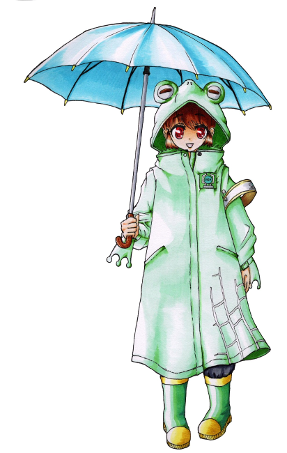

メインログ / 雑談ログ
キャラシート
PC1：新城りりか (キャラシート) PL：めいPC2：円藤照 (キャラシート) PL：ふろずん
PC3：蛙御蛇晴 (キャラシート) PL：がぶらす
目次
■オープニングフェイズ01 雪色の花
02 奈落の予感
03 反乱を企らむ者
プリプレイ
GM : ではPCの紹介から！PC1から順にお願いします！
新城りりか : はい！

新城りりか : 新城りりか、コードネームはバッドジョーカー！
新城りりか : ピンク髪ツインテールで制服のスカートを限界まで短くしてる頭ゆるゆるの女子高生です！
新城りりか : FHチルドレンだったけどわけあって自分のセルをぶち壊してFHを離反した後、霧谷くんに助けられてなんやかんやで恩を返すためにイリーガルになりました！
新城りりか : UGNからもFHからも恨みを買いまくってるけど、特に気にせずバット振り回して暴れてます！よろしくお願いします
GM : 顔に似合わず無頼系だ！ 今回はUGN存亡の危機なので自慢のバットで頑張ってほしいね…！
新城りりか : がんばりりか！
■PC1：新城りりか
ロイス：神崎真白(かんざき・ましろ) 推奨感情：庇護/不安
カヴァー/ワークス：高校生/指定無し
友人達と共にある生活を営みながら、UGNイリーガルとして生きるキミに、ひとつの"指令"が下された。
数日後にパレスＫホテルで開かれるUGN幹部会議を警護せよ、というものだ。
その中で起こった"彼女"との出会いが、キミを再び非日常の世界へと誘う──。
GM : ハンドアウトはこんな感じ！
新城りりか : ましましろーん…どんな感じになるか楽しみしみ
神崎 真白 : 楽しみね…GMもこれから動かしていく中でキャラを確立していくことになる…と思う！
GM : じゃあ次いきましょ！ PC2お願いします！
円藤 照 : はいな！

円藤 照 : 円藤支部長は、"エスケープキラー"の異名で恐れられるUGN本部査察部第4課(UG78頁)をかつて束ねていた人物です。
円藤 照 : 後の中枢評議員であり、今は査察部部長である"ミリオンサンズ"アッシュ・レドリック(上級91頁/HR36頁)の「UGNには改革が必要である」という考えに賛同し、彼の右腕として数々の離反者たちを裁いてきました。
円藤 照 : しかし、UGN評議員入りを目前にして彼が指示したと思われる「正義のための不正」を認めることができなかったため、彼の下を去りました。
円藤 照 : 査察部を辞めた後は、日本のK市を守る支部長として「自分の正義とは何なのか」を考えながら、のんびりと過ごしています。
円藤 照 : 戦闘では、自身を中心とした環状に浮かぶ魔眼を高速旋回することで、斬撃を生み出して攻撃します！ データ的には、範囲攻撃と防御反射を主な武器として、クライマックスでは敵の行動封じとか味方の支援とかの様々な切り札を持ってます！！
円藤 照 : RPでは、大人のヨユウで一歩引いたイケメン保護者ムーヴができたらいいなってカンジ！！ 以上！！
GM : かっこいい支部長！ 今回K市がいろいろ大変なことになるので…存分にイケメンしてくれ！
■PC2：円藤照
ロイス："ネームレス" 推奨感情：感服/隔意
カヴァー/ワークス：指定なし/UGN支部長
K市のUGN支部長として様々な難題を解決してきたキミは、
数日後に行われるUGN幹部会議の警備責任者を任された。
キミは、これまでキミの輝かしい経歴を支えてくれた情報屋……
コードネーム"ネームレス"に任務をサポートして貰うために連絡をとった。
GM : ハンドアウトはこんな感じ！どう見てもただの犬だが凄腕の情報屋につながっている”ネームレス”からタレコミが入るぞ
円藤 照 : 査察部時代から"ネームレス"とは付き合いがある設定にしたので、わんことも仲良くしていきたいね…🐶
GM : よろしくだワン…今回は査察部がらみのキャラが多い珍しいセッションだ
GM : では最後！PC3おねがいします！
蛙御蛇 晴 : へへい！
蛙御蛇 晴 : "天の恵み"(ｳｪｻﾞｰﾄﾗｯﾌﾟ)、蛙御蛇晴(あみだはる)ちゃん！
蛙御蛇 晴 :
FHの活動によって両親は死亡、妹は精神的なショックにより病院を出ることができない体になってしまったよ！
その際にこの子も致命傷を負ったけど、オーヴァードに覚醒！一緒に傘とレインコートもレネゲイドに感染して、彼女の体が如く操れるようになったよ！
蛙御蛇 晴 : この武装と、降りしきる魔眼の雨にちなんで"天の恵み"っていうコードネームがついたけど本人は皮肉にしか思ってないよ
蛙御蛇 晴 : UGNで査察官として働きつつ、妹の天を助ける方法を模索しているわね。
蛙御蛇 晴 : 普段から朗らかな笑顔だけど、本人曰く「それは傘が代わりに泣いてくれているから」らしいよ
蛙御蛇 晴 : FHはキツめに憎んでるよ
GM : ヒエッ…
蛙御蛇 晴 : 戦闘では、最速で動いて硬直をかますタイプになるかしら、火力も出す
蛙御蛇 晴 : ロールプレイはこう…ちょっと冷たいけどフレンドリーな口調って感じになると思う
蛙御蛇 晴 : 以上！
GM : 了解了解！ PC1ともPC2とも絡みが楽しみな設定だ…
■PC3：蛙御蛇晴
ロイス：反乱を企む者 推奨感情：好奇心/猜疑心
カヴァー/ワークス：指定なし/UGNエージェント
キミはUGNの本部エージェントだ。
近く行われるUGN幹部会議のため、K市を訪れていたあなたは、
唐突に同じ本部エージェントである一人の男からの連絡を受ける。
「重大な情報を入手した。お前に託したい」と。
GM : 公式のハンドアウトはこんな感じ。天道は元査察部の同僚で、仕事の合間を縫ってあなたの妹の病気の調査に協力してくれたりしていました。
蛙御蛇 晴 : 感謝しかない
天道 大地 : 元警察官の真面目で面白味に欠ける性格だが、それだけに信用のできる人間という感じですね！ そんな彼から今回は協力を依頼されます
GM : では自己紹介は以上。オープニングへ入っていきましょう
新城りりか : いぇいいぇい！
蛙御蛇 晴 : ﾖｯｼｬｲｸｿﾞｰ!
円藤 照 : わあい！
メインプレイ
シーン1 雪色の花
GM : PC1のオープニングです！登場侵蝕を5点上げてください。
system : [ 新城りりか ] 侵蝕値 : 30 → 35
K市
GM : 冬も近づくある日。
GM : あなたは、数日後に行われるUGN幹部会議の会場となるパレスKホテルへの道を急いでいた。
GM : 複雑な過去から、普段は現地のUGNと協力することも少ないあなただが、重要な会議が行われるという事情もあり、日本支部長たっての希望で今回の会議の警備へ参加することになっていた。
GM : 時計を確認すれば、警備隊長である円藤照との打ち合わせ時刻に遅刻しそうだ…！
GM : しかし、近道である雑木林を抜けて行けばまだ十分間に合うだろう。
新城りりか : 「え、やば～……もうこんな時間じゃん！」 左手につけた腕時計を確認して
新城りりか : 「……あ、でもこっち通れば間に合うかな。まあもし間に合わなくても何とかなるっしょ」
新城りりか : そんな風に焦ったりあんまり焦ってなかったりしながら雑木林に走っていきましょ！
雑木林
GM : では、あなたが雑木林を駆け抜けていくと……
GM : 林の深いところから、血の匂いが漂ってくる。
新城りりか : 「ん？……うわ、くさっ！？なにこれ！血！？」 一旦立ち止まって
新城りりか : 「えー、なんか誰か戦ってたりするー……？っていうか死んでるのかなぁ」
新城りりか : 気になるので匂いが漂ってくる方を見に行きます。
GM : では匂いの元は、雑木林の開けた部分へとつながっている。
GM : そこには、真っ白な和服に身を包んだ、ひとりの少女が倒れている。
GM : 少女は怪我を負っており、血が白い服と地面を赤く染め上げていた。
新城りりか : 「わ……！やばやばのやばじゃん。なにこれ意味不なんだけど」
新城りりか : 若干驚きつつ少女の方に近付いて行こう。
GM : では近づくと……その気配を察知したのか、少女が目を開く。
神崎 真白 : 「ん……」
新城りりか : 「あ、なんだー生きてるじゃん。大丈夫そ？」 少女の前に屈んで、安心したように笑いかける
神崎 真白 : 「……だ、大丈夫……だよ。転んだだけだから」 人が通りかかったことに少し戸惑いながら、そう返事をする
神崎 真白 : 確かにあたりは血に塗れているが、すでに出血している様子はない
新城りりか : 「えー！転んだだけでそんな風になるとかある！？ちょっと見してよ、ほらこんなべっとべとでー……」
新城りりか : 「……あれ、別に血が出てるわけじゃないっぽい？」 首を傾げて
神崎 真白 : 「ほ、ほんとに大丈夫だから…！ ほら、この通り」困った風に、ぴょんぴょんと跳ねてみせる。
新城りりか : 「めっちゃ元気じゃん！」
新城りりか : 「なーんだ、よかったよかったぁ」 笑いながら立ち上がる
神崎 真白 : 「うん、でも……」
神崎 真白 : 「心配、してくれたんだね……ありがとう」
新城りりか : 「いやそりゃ心配するでしょー、マジ血塗れだし」
神崎 真白 : 「え、そ……そっか、そうだよね……！」
GM : 少女はどこか嬉し気な表情を浮かべる。
神崎 真白 : 「ね……わたし、ましろ。神崎真白。あなたは？」
新城りりか : 「うん？あたし？新城りりかだよー」
神崎 真白 : 「りりか……新城りりか、それがあなたの名前なんだね……」
神崎 真白 : 「うん、覚えた」 雪のような無邪気な笑顔で
新城りりか : 「…………」
新城りりか : 「えー、どちゃくそにきゃわじゃん～！めっちゃ血で濡れてるのに笑顔かわいくてワロ～」 口元を手で隠しながら笑って
神崎 真白 : 「きゃ、きゃわ……？？」 初めて聞く言葉に困惑しているようだ
新城りりか : 「マジかわいくてびっくりしたって感じ？」
新城りりか : 「ふつーそんな血で濡れて笑ってたらもっとやばい感じに見えるでしょみたいな」
神崎 真白 : 「そ、それって褒めてるのかな……よくわからないけど、ありがとう……？」困惑しながらも、なんだか嬉しそうだ
新城りりか : 「褒めてる褒めてる～。ってか真白ちゃん、その服どうするの？なんか着替えとか無い感じ？」
神崎 真白 : 「ん……大丈夫、着替えなら、帰ったらちゃんとあるから……」
新城りりか : 「そりゃ家ならあるでしょー。でも問題なのは家帰るまでじゃない？そんなかっこじゃ周りびびっちゃうよ」
神崎 真白 : 「そ、そうだよね……気づかれないように戻らなきゃだよね……」
神崎 真白 : 今着替える服とかはないらしい
新城りりか : 「それな～。あ、でも気付かれないようにって家この辺なわけ？」
神崎 真白 : 「ち、違うけど……」
GM : 言われてみれば確かに……という感じで黙りこくってしまう。
新城りりか : 「じゃあ無理じゃん！えー、どうしよっかなー……っていうか……」
新城りりか : 「この血、どう見ても新しいし絶対なんかこの辺で誰か襲われてたとか戦ってたとかなんよね～……」 血だまりの前で屈んで小声で呟きながら
神崎 真白 : 「……！」
新城りりか : 「よく考えたらこの辺り留まってるの危険なんじゃね？って感じだしぃ……あんまりだらだら考えてるのもあれかー……」 ぶつぶつ呟きながら思案して
新城りりか : 「ねえ真白ちゃん、とりまあたしの行こうとしてるとこ一緒に行かない？雑木林抜けてすぐなんだけど、そこで着替え借りて帰るみたいな」 立ち上がって
神崎 真白 : 「え、えっと……」
神崎 真白 : 「ごめん！ 私、これからどうしても急がないといけなくて……！」
新城りりか : 「えー？急ぐって何！？そんなかっこで！？」
神崎 真白 : 「うん、どうしても……！ だから、ちょっと寄り道はしてられないの……気持ちは嬉しいけど……」
新城りりか : 「じゃあしょうがないかー。通報されそうで心配だけど」
神崎 真白 : 「ん、それは大丈夫……！ でも、心配してくれてありがとう……」
GM : 真白が急いでいるのは本当なようで、そわそわと今にも走り出しそうにしている。
新城りりか : 「おけおけ！別にいいけど、じゃあ林から出るまで一緒にいこ！」
新城りりか : 「どう見ても危険じゃんこれ。ここで暴れた奴絶対まだ近くにいるでしょ」 血だまりを指差して
新城りりか : 「いやあたしらずっとここでだらだら喋ってたから今更だけど」
神崎 真白 : 「……うん、ありがとう」逡巡しながらも、嬉しいような、不安そうな、複雑な表情で了承する
新城りりか : 「ってかあたしも一人だと不安みたいな？じゃあ行こ！」 って真白ちゃんの手を引いて歩き出そう
新城りりか : 「（今あたし結構UGNっぽいことしてるんじゃない？分からんけど）」
神崎 真白 : 「う、うん……！」 手を引かれてちょっとびっくりするが、ついていく。
新城りりか : そんな感じで真白ちゃんが目指してる方角に向けて、林から出ます！
新城りりか : 「あ、出れた出れた。何も無くてよかったー」 手を離す
神崎 真白 : 「ふふ……本当にありがとうね、心配してくれて……」
新城りりか : 「いーのいーの」 手を振ってる
神崎 真白 : 「うん、じゃあ、ね」名残惜しそうに手を振って
GM : 真白は、あなたと別れて歩き出す。
新城りりか : 「ん、じゃーね！もう血で滑って転んじゃだめだよ」
新城りりか : 「いや血で滑ることなんてそうそうないわみたいな！とりあえず気を付けてねー」 笑顔で手を振って見送る
神崎 真白 : 「……うん、りりかも気を付けてね！」
新城りりか : 「おけおけ～」 そんな感じで見えなくなるまで手を振って
新城りりか : 「ってか気を付けるも何も時間ピンチすぎ～……。どうやってもこれ遅刻確定なんですけどー……」 腕時計を青ざめた顔で確認する
新城りりか : 「…………」 腕組して空を仰いで
新城りりか : 「もうゆっくり行っていっか。お腹空いて来たし軽くラーメン食べよ～っと」
新城りりか : そんな風に林に戻らずぐるっと回る形で待ち合わせ場所まで行きます。寄り道しながら。
GM : では、立ち去るあなたの背に声が聞こえる。
神崎 真白 : 「りりか……これからしばらく……この町から離れていないと、ダメだよ」
新城りりか : 「え……？」 振り返る
GM : 声は確かに聞こえたのに、振り返っても、もう真白の姿はない。
新城りりか : 「え、幻聴じゃん、やば～……」 びっくりして固まってる
GM : 幻聴だったのか？ 疑問に答えるものはなく……空からは、はらりと雪が落ちてくる。
新城りりか : 「……でも、なーんか気のせいって感じもしないかも」
新城りりか : 「よく分かんないけど、さっきの血のことも気になるし……やっぱ急ごうかなー……」
新城りりか : 「……あっははは！！真面目かって！！」 落ちて来た雪を掌で触れながら、一人で受けたように笑って
新城りりか : とりあえずそのまま小走りでそこから立ち去っていきます。
GM : おけおけ、ではシーンエンド！
シーン2 奈落の予感
GM : 円藤さんのシーンです。登場どうぞ！
system : [ 円藤 照 ] 侵蝕値 : 36 → 41
UGN・K市支部ビル内 支部長室
GM : 君は、ゆったりとした椅子に腰かけ、分厚い参考資料の束に目を通しながら、部下の報告に耳を傾けている。
GM : デスクの横では、一頭の犬が場違いにも昼寝をしている。
GM : 議題は、数日後に控えたUGN幹部会議についてだ。
部下 : 「……以上の事実により、今回の幹部会議においてFHがなんらかの陰謀を企てている、と予想されます」
部下 : 「作戦の指揮者のコードネームは……”ロード・オブ・アビス”。それ以上のことは今はわかりません」
円藤 照 : 「"ロード・オブ・アビス"の陰謀、か。 ……私が警備責任者などというのは人選ミスだと思うが」
円藤 照 : 「殺ししか能のない男に警備を一任するとは、上層部はいったい何を考えているのやら……」
円藤 照 : 「……すまない。 君に愚痴を言っても仕方ないな。 事には全力で当たるだけだ」
部下 : 「ええ……よろしくお願いします」 元は本部エージェントとして恐れられたあなたを前に、部下もすこし収まりが悪そうだ。
円藤 照 : 「君たちにも負担を強いることになるかもしれないが、これは幹部たちに実力をアピールする絶好の機会でもある。 よろしく頼むよ」部下たちの緊張をほぐすために、柔和な笑みを浮かべる
部下 : 「はい、心得ています」
GM : と、そうやって打ち合わせをしていると、デスクの横で寝ていた犬の耳がびくりと動く。
"ネームレス" : 「なかなか大変そうですね、"果ての月"」
円藤 照 : 「ええ。 ネームレス殿のような愛苦しさを持ち合わせていれば、こうした苦労はないのでしょうが、なかなかどうして難しい」
"ネームレス" : 「これだけ重要な会議の警備とあっては、情報屋の手助けが必要なのでは？」
"ネームレス" : 含みを持たせた風に尋ねる。
円藤 照 : 「そうですね。そのつもりでした」
円藤 照 : 「……今すぐに調べてほしいことが二つ。 ひとつは"ロード・オブ・アビス"のこと」
円藤 照 : 「もうひとつは……、霧谷殿から派遣されてくるUGNイリーガルのことを調べてほしいのです」
"ネームレス" : 「イリーガル……ああ、彼女のことですね。承知いたしました。ふふ、日本支部長はよほど今回の会議に警戒を払っておられるようだ」
"ネームレス" : 「さて、"ロード・オブ・アビス"ですが……実は彼奴については私も個人的に調査を進めておりましてね」
"ネームレス" : 「奇妙なことにFHに探りを入れても全く馬脚を現さないのです。よほどガードが固いのか何なのか……」
円藤 照 : 「……ふむ。 あなたほどの情報屋が尻尾も掴めないと」
"ネームレス" : 「ええ、困ったものです」 尻尾を振りながら
円藤 照 : 「これは貧乏クジを引かされましたかな」あくまでヨユウそうに笑う
"ネームレス" : 「そこでこちらからもお願いなのですが、僭越ながら、この情報屋にお力添えをいただきたいのです」
円藤 照 : 「力添え、ですか？」
"ネームレス" : 「なに、難しいことではありません。ただ……」
"ネームレス" : 「ほんの少し、UGNの情報網をお貸しいただけないかと」
円藤 照 : 「なるほど、いいでしょう。 あなたのことは信頼していますし」
円藤 照 : 「しかし、ひとつ条件があります」
"ネームレス" : 「ええ、何なりと」
円藤 照 : 「では、交換条件を」
円藤 照 : 「……そろそろ、オリジナルの貴方とも酒を酌み交わしてみたいのですが、如何でしょう？ 今回の任務が終わった時にでも」小さく笑みを浮かべ
"ネームレス" : 「ふむ……」
"ネームレス" : 「……良いでしょう。この件は、その位の価値がある」
円藤 照 : 「ふふ。 では、そのように」
円藤 照 : 「たのしみにしておきますよ、"ネームレス"ではない、名も顔もある貴方と会うのを」
"ネームレス" : 「その情報は墓まで持っていって頂きますがね……では、交渉成立、ということで」
円藤 照 : 「はい。 ……ああ、UGNイリーガルの少女の情報については、彼女と会う日までに用意しておいていただきたく」
"ネームレス" : 「そちらの情報はすぐに手配します。では、これにて失礼いたします」
GM : ”ネームレス”はそう告げると、気の抜けた表情であくびをしてから、器用に支部長室の扉を開けて去っていく。
GM : 果たして”ロード・オブ・アビス”の思惑とは？ そして、霧谷が手配したというイリーガルとはどのような人物なのか。
GM : いくつもの不確定要素を抱えながらも、幹部会議の日は確実に迫っている……。
GM : シーンエンド
シーン3 反乱を企らむ者
K市某所 UGN査察部詰所
GM : 晴ちゃんのOPだ！登場をどうぞ！
system : [ 蛙御蛇 晴 ] 侵蝕値 : 43 → 48
GM : K市某所、UGN査察部の詰所。
GM : 近く、K市で行われるUGN幹部会議。
GM : 日本支部をはじめとした国内で活動するUGN幹部を集めたこの会議。当然、議論の内容に”不適切”なものがないか本部からの査察が入る。
GM : その大役の一翼を担うのがあなただ。
GM : ここのところは連日連夜、事前資料の査読などで資料室にこもり切りになっていることだろう。
蛙御蛇 晴 : 「～♪～～♬」
蛙御蛇 晴 : 「も～ちょっと～♪、人員割いても～♬、いいんだよ～♫」
蛙御蛇 晴 : 「……って言っても、日本に精通してる本部職員あんまりだし…しょうがないんだ…」ぶつくさ
GM : ……査察部局長、”ミリオンサンズ”ことアッシュ・レドリックの打ち出した「無能はいらん」という方針により、査察部は少数精鋭の体制を取っている。
GM : 彼の方針により査察部は大きな成果を上げることになるが、時にそのしわ寄せがこうして現れることもある……。
GM : 閑話休題。あなたが仕事をしていると、不意に着信の電子音が鳴る。
蛙御蛇 晴 : 「ん」電話取る
蛙御蛇 晴 : これ仕事用？
GM : これは……仕事用の電話ではないよ！プライベートで使ってるやつ
蛙御蛇 晴 : 了解！
蛙御蛇 晴 : 「はいもしもし、蛙御蛇です」
天道 大地 : 「久しぶりだな。蛙御蛇」
天道 大地 : 「俺だ。天道だ」
GM : 着信元はかつての同僚、天道大地だ。
蛙御蛇 晴 : 「アレ、天道さん！久しぶりです～、今どこ部署にいるんでしたっけ～」
天道 大地 : 「ああ、いろいろあって、今は長瀬の下だ。そっちはまだ査察部にいるのか？」
蛙御蛇 晴 : 「あ～長瀬さん。はい、私はまだ査察部にいますよ？割と性に合ってますから」
GM : 長瀬――長瀬明。あまたのUGN幹部の中でも、特筆すべき有力者として、本部の人間ならその名を知らぬものはない。
GM : 現在、UGNの意思決定機関である中枢評議会に欠員はないが、一部で引退が囁かれている人物も存在する。
GM : その後開いた枠に入る新たな評議員……その候補として急進派が推しているのは二人。
GM : 査察部局長アッシュ・レドリック。そして、もう一人が長瀬明である。
天道 大地 : 「そうか……妹さんの様子は、どうだ」
蛙御蛇 晴 : 「……ううん、進展は無いかな。意識はあるし、会話だってできる。でも…普通の生活に戻るのは厳しそう…」
天道 大地 : 「そうか……悪いな。異動してからあまり力になれなくて」
GM : 査察部の同僚であった天道は、あなたたち姉妹のことをよく気にかけていた。今もその気持ちに変わりはないようだった。
蛙御蛇 晴 : 「…しょうがないよ。長瀬さんの下ってことは、そっちも相応に忙しいだろうし」
天道 大地 : 「……」
GM : しばらく間があって、天道は話し出す
天道 大地 : 「蛙御蛇。忙しいところ、本当に申し訳ないが……ひとつ、頼みを聞いてくれないか」
蛙御蛇 晴 : 「んああ、天道さんの頼みなら聞きたいけど…内容だけいいかな？」
天道 大地 : 「ある筋から暗号化されたデータを入手した。それの解析を手伝ってほしい」
天道 大地 : 「詳しくは明日、会って話す。データはその時に渡す。……お前にしか頼めない仕事だ」
蛙御蛇 晴 : 「………わかった」
天道 大地 : 「……理由を聞かないのか」驚いたように
蛙御蛇 晴 : 「え、掘ってほしかったの？深刻そうだったから…」
天道 大地 : 「……いや、いいんだ。今はまだ話すべき時ではないからな」
蛙御蛇 晴 : 「そういうことなんでしょ？…天道さんがそんな…無駄に深刻そうに頼み事なんてしないだろうし。私に協力できることならさせて？」
天道 大地 : 「蛙御蛇……」
天道 大地 : 「……ありがとう。ごめんな」
GM : 天道は、待ち合わせの時刻と場所を告げる。
天道 大地 : 「……積もる話はあるが、こちらも時間が押しててな。じゃあ、切るぞ」
蛙御蛇 晴 : 「はい、それじゃぁ明日」
GM : ぷつん、と通話が切れる。
GM : 彼の真に迫った様子に、あなたはただならぬものを感じただろう。
GM : 明日、待ち合わせ場所で何が起きるのか？ 不安を抱えながらも、今日のところは山積みの仕事に戻るのであった……。
GM : シーンエンド